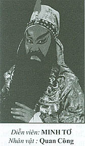

NGƯỜI TRỒNG CÂY SI GIA LONG
Yêu một cô nữ sinh Gia Long, tôi nghĩ đó là một chuyện bình thường của một chàng trai tốt số, đẹp trai, học giỏi, con nhà giàu và có phước là được quen biết cô nữ sinh Gia Long. Nhưng chuyện yêu đương như vậy không bình thường đối với người nghệ sĩ, nhất là trong cái thời kỳ mà dân mình còn nặng thành kiến: nghệ sĩ là xướng ca vô loại. Người nghệ sĩ cải lương mà nói tới chuyện yêu một cô nữ sinh Gia Long là nói tới chuyện của người muốn với tay hái sao trời. Ây vậy mà có lúc tôi mang tiếng là người trồng cây si Gia Long, người muốn hái sao trời!
 .
.
Chuyện là vầy…
Năm 1943, tôi làm việc ở Sở Bưu Điện Saigon. Vì quê tôi ở Mỹ Tho nên mấy năm nay, tôi ở nhà của cậu tôi( Bazar Hồ Hữu Đức) ở đường Bonard gần chợ Bến Thành để tiện đi làm việc. Con gái út của cậu tôi, em Hồ Ngọc Lâm học năm thứ hai trường nữ trung học Gia Long. Vì em Lâm học ngoại trú nên cậu tôi có mướn xe xích lô đạp đưa rước em đi học mỗi ngày. Một hôm anh xích lô bịnh bất ngờ, cậu nhờ tôi chở cho em đi học.
Tưởng trường nữ trung học Gia Long ở đâu xa, không ngờ đó là trường áo tím ngày xưa. Hồi đó trường có một cái tên Pháp: Collège des Jeunes Filles Annamites. Hỏng hiểu sao và từ bao giờ, trường có tên mới: Trường nữ trung học Gia Long. Và các cô áo tím ngày xưa được thay bằng những cô áo trắng, cũng đẹp như tiên, cũng xinh như mộng.
Tôi đưa rước em Lâm đi học chỉ được vài hôm thôi. Khi anh phu xích lô đạp hết bịnh là tôi bị mất đi cái công việc đưa rước lý thú đó.Tuy nhiên mỗi khi đi đến Sở làm tôi vẫn đạp xe đạp chạy ngang trường, nhìn các cô học sinh vô cổng trường rồi tôi mới đạp xe thật mau chạy về Sở làm. Buổi chiều đến giờ tan học, tôi không có phận sự đón rước ai nhưng tôi cũng tới trước cổng trường, dựng xe đạp, đứng trông ngóng như chờ đón ai!
Một cây si bắt đầu mọc trước cửa trường Gia Long bên cạnh những cây sao trên vệ đường.
Có lần em Lâm thấy tôi đứng trước cổng trường, về nhà em hỏi tôi đứng đó chờ đợi ai? Tôi dối là tôi theo anh Thoại, đón em gái của Thoại… thật ra thì tôi trồng cây si trước cổng trường là vì tôi muốn nhìn thấy mặt cô S. bạn học đồng lớp với em Lâm.
Cô S. thường đến nhà chơi với em Lâm, có khi thì ở lại ăn cơm trưa, có khi thì cùng với Lâm đi xem ciné ở rạp Eden. Cô S. xem tôi như một người anh nên chuyện trò vui vẻ tự nhiên, còn tôi thì không biết là từ bao giờ, tôi cảm thấy lúng ta lúng túng… mất tự nhiên trước mặt S.
Cô nàng nước da trắng như tuyết, má hồng, môi mộng, đôi mắt thơ ngây, tiếng cười trong suốt như pha lê… S. rất dễ thương, nói năng dịu dàng, những khi đi chơi hay dạo chợ Bến Thành với Lâm, khi về nhà cô S. thường có một món quà nhỏ cho tôi, khi thì một trái ổi xá lị, khi thì một bịt chè đậu trắng hoặc bánh lọt nước dừa.
Có một lần, đi ngang phòng của tôi, S. thấy sách vở, áo quần của tôi vất bừa bãi, S. vào thu xếp dùm. Khi đó thì tôi đang đánh Ping Pong với Thái và Hoanh, anh của Lâm ở trên lầu ba. Tôi nghe tiếng Lâm nói:
– Kệ ảnh đi, mầy dọn dẹp sạch sẽ bữa nay, ngày mai cũng y như vậy hè. Ba tao la ảnh hoài, chứng nào tật nấy, ảnh đi làm về, khi rảnh thì đi đánh Ping Pong hoặc tắm piscine, chớ ảnh hỏng có rớ tới ba cái vụ quét dọn chỗ ở của ảnh đâu”
– Thì tiện tay, tôi giúp ảnh thôi! – S. nhỏ nhẹ trả lời.
Tôi nhường cho Hoanh và Thái đánh banh với nhau, trở về phòng của tôi thì S. và Lâm đã rủ nhau đi xem ciné rồi. Tôi nghe thoang thoảng mùi nước hoa Revlon còn phảng phất đâu đây, tôi nghe xao xuyến trong lòng…
Tôi bắt đầu dệt mộng, học đàn mando… học hát bài Thiên Thai… mơ tới suối Ngọc Tuyền, mộng thấy nàng tiên áo trắng. Mỗi sáng, mỗi chiều tôi đi ngang cổng trường nhìn những tà áo dài trắng lả lướt mà tưởng chừng các nàng tiên nữ áo trắng lượn bay… tôi muốn chiêm ngưỡng vị thiên thần áo trắng của tôi.
Cô S. vẫn thường đến chơi với em Lâm, vẫn tự nhiên mỗi khi gặp tôi và có lẽ cô không biết là tôi đã yêu cô. Tôi chép một bài thơ hay, bài Tình Tuyệt Vọng của Arvers do Khá Hưng dịch, ghép vào một trang sách mà tôi cố tình để bừa bãi trên bàn. Tôi lánh mặt lên ở trên lầu ba.
Cô S. và Lâm về, cô nhìn vô phòng của tôi, tôi nghe tiếng cô cằn nhằn: “Lại nữa rồi…Sạch sẽ ngăn nắp chỉ được một hai ngày thôi, chứng nào tật nấy đúng như Lâm nói”.
– Ý! có bài thơ kìa…(Lâm cầm thơ, nói) để tao đọc.
Tình Tuyệt Vọng.
Lòng ta chôn một khối tình
Tình trong giây phút mà thành thiên thâu
Tình tuyệt vọng, mối thảm sầu,
Mà người gieo thảm như hầu không hay
Hỡi ôi, người đó, ta đây,
Sao ta thui thủi đêm ngày chiếc thân?
Dẫu ta đi trọn đường trần,
Chuyện riêng dễ dám một lần hé môi
Người dù ngọc nói hoa cười,
Nhìn ta như thể nhìn người không quen.
Đường đời lặng lẽ bước tiên
Ngờ đâu chân đạp lên trên khối tình
Một niềm tiết liệt đoan trinh
Xem thơ nào biết có mình ở trong,
Lạnh lùng lòng sẽ hỏi lòng:
” Người đâu ta ở mấy dòng thơ đây? ”
Cả hai cô cùng cười, khen thơ hay nhưng không hỏi vì sao có bài thơ để ở đó. Sau đó vài hôm thì S. không đến chơi với Lâm nữa. Tôi nhiều lần đến cổng trường, cũng những tà áo trắng mỗi buổi tan học túa ra các nẻo đường như những cánh bướm trắng, những nàng tiên áo trắng, chỉ có nàng tiên áo trắng của riêng tôi thì biền biệt chẳng thấy tăm dạng ở đâu. Tôi như một kẻ mất hồn…
Tháng 9 năm 1945, Saigon sôi sục với những cuộc xuống đường… Saigon ầm vang những lời ca hát trên hè phố của Thanh Niên Tiền Phong…Tôi cũng bị cuốn hút vào vòng lũ của những chàng thanh niên ” nóp với giáo mang ngang vai… ”
Năm 1947, tôi trở về làm việc nơi nhiệm sở cũ và mướn nhà ở đường hẻm Cá Hấp, tôi không ở nhà của cậu tôi nữa vì cậu đã sang Bazar cho chủ khác. Về Saigon tôi mới biết là em Lâm đã mất trong trận chống càn ở cù lao Quới Sơn hồi cuối năm 1946. Cô S. thì vẫn vắng bặt bóng chim tăm cá.
Những chiều tan Sở làm, tôi tránh không đi về ngang trước cổng trường Gia Long vì tôi sợ phải nhìn thấy những tà áo trắng quyến rũ ngày xưa mà lòng thêm thương thêm nhớ…
Để tìm quên, chiều chiều tôi ra place Cuniac, uống bia hơi rồi ghé lại rạp Thành Xương coi hát hoặc chuyện trò với các bạn nghệ sĩ mới quen. Một khung trời mới hiện ra trước mắt tôi: cuộc sống rày đây mai đó của người nghệ sĩ hấp dẫn và nhiều hứa hẹn hơn là cuộc sống bình lặng nhàm chán của một viên công chức bực trung.
Thế là tôi xách va ly theo gánh hát với các bạn nghệ sĩ như một cô gái cuốn gói theo người yêu, bất kể tới những bất trắc sẽ gặp phải trên đường đời.( 1948)
Vô đoàn hát, tôi làm một công việc bá nghệ: là quản lý, tôi thay mặt chủ bầu và nghệ sĩ để tiếp xúc với các cấp chánh quyền sở tại, nơi đoàn hát đang trình diễn hay sẽ đến. Tôi có học về điện và máy móc nên tôi trở thành sư phụ của các anh chuyên viên ánh sáng của gánh hát, tôi giúp cho các anh làm ra các máy chiếu làm mây, làm nước trên sân khấu. Tôi dạy cho các nghệ sĩ học chữ quốc ngữ, dạy cho họ tập đọc, tập viết để học tuồng dễ dàng hơn. Tôi chép tuồng để đem đi kiểm duyệt. Tôi bắt đầu học hát và tập soạn tuồng hát, tóm lại, ai cần tôi làm giúp điều gì thì tôi sắn sàng giúp, không nệ hà gì
Nhờ vậy mà tôi được cảm tình của mọi thành viên trong gánh hát. Thêm nữa, tiền lương của tôi trong gánh hát khá cao, tôi lại chưa có vợ, tánh tình hiền hậu dễ thương nên nhiều cô đào trẻ chưa chồng trong gánh hát vây quanh tôi, muốn bắt tôi làm chủ trái tim của một người trong bọn họ. Họ săn đón, vồn vã, có người chăm lo cho tôi từng bữa ăn, giấc ngủ. Có người giành giặt ủi áo quần, có người rủ đi du ngoạn mỗi khi đến hát ở các vùng có danh lam thắng cảnh.
Nói về nhan sắc thì cô nào cũng đẹp, ca hay, hát giỏi, ánh mắt liếc bén như dao, nụ cười ru hồn khách mộ điệu. Họ sống tự do, thoải mái, dễ tiếp xúc, dễ làm quen, nếu tôi muốn lập gia đình, chỉ cần tôi có một nụ cười đồng lõa hay một cái gật đầu nghiêm chỉnh là tôi chấm dứt đi những ước mơ và hy vọng của riêng tôi để mà ghép cuộc đời mình với cuộc sống của một cô đào hát nào đó.
Tôi chưa có sự nghiệp, chưa có danh vọng trong giới sân khấu, tôi muốn học đòi theo các bậc thầy Năm Châu, Tư Chơi, Năm Nở trong lãnh vực sáng tác, vì vậy tôi muốn được yên thân, muốn thoát khỏi cuộc bao vây quấy rầy của các cô đào thân mến đó nên tôi tuyên bố là tôi có một người yêu vốn là nữ sinh Gia Long. Chờ khi nào cô học tốt nghiệp xong và tôi thành công được một tác phẩm trên sân khấu thì chúng tôi sẽ làm lễ thành hôn.
Một hôm, các bạn nghệ sĩ Tám Cao, Trường Xuân, Tuấn Sĩ, hề Lòng và cô đào chánh Ngọc An cùng với tôi uống bia nói chuyện tâm tình trên bãi biển Nha Trang, Ngọc An hỏi tôi:
– Anh Phương có vợ thiệt rồi, phải không?
– Phải, chúng tôi đã hứa hôn với nhau, tuy chưa cưới nhưng nhứt dịnh rồi sẽ cưới.
Ngọc An ngập ngừng hỏi.: ” Chị ấy đẹp lắm, phải không? ”
Tôi không trả lời mà chỉ nhìn ra ngoài biển khơi, khe khẽ ngâm mấy câu thơ Thanh Bình Điệu của thi hào Lý Bạch:
” Vân tưởng y thường, hoa tưởng dung,
– Xuân phong phất hạm lộ hoa nùng.
Nhược phi quần ngọc, sơn đầu kiến,
– Hội hướng Dao – Đài nguyệt hạ phùng”
Trường Xuân bưng ly rượu lên, uống một hơi cạn ly, lầm bầm:
–Trông đám mây tưởng là xiêm áo nàng, trông đóa hoa, tưởng là vẻ mặt nàng, à anh Phương đúng là người trồng cây si Gia Long..
Nhờ có lá bùa “Si Gia Long ” dán trên quả tim mà ông thần tình ái không đến quyến rũ tôi nữa, các cô đào đẹp của đoàn hát không còn gọi tôi tên Phương mà đổi lại là anh Si, chàng Si!
Cho tới một hôm đoàn hát bán dàn, hát ở quận Cần Giờ nhân dịp lễ cúng Kỳ Yên, cúng vía Ông ( Cá ông), tôi nhớ là khoảng tháng 10 năm 1949, lễ cúng Kỳ Yên (cầu an), xuân thu nhị kỳ, xuân cầu, thu báo, nên Hội đồng Xã rước Ban hát bội Vĩnh Xuân ra hát ba thứ San Hậu để khai chầu và sau đó thì gánh hát Tiếng Chuông của bầu Cang hát tiếp bốn đêm tuồng đồ, tuồng truyện cho dân chúng trong huyện Cần Giờ xem chơi nhân dịp cả huyện ăn mừng trúng mùa cá tôm.
Tôi theo ghe hát của Ban hát bội Vĩnh Xuân ra Cần Giờ trước để sắp đặt chỗ ăn ở cho các nghệ sĩ đoàn hát Tiếng Chuông, vì vậy tôi được dịp xem hát đầy đủ cả ba thứ San Hậu. Có thể nói là trong các thập niên 1960, 1970 và sau này không có gánh hát nào hát đủ ba thứ San Hậu như Ban hát Vĩnh Xuân hồi đó đã hát.
Tôi nghĩ cũng nên nhắc lại ba thứ hát của tuồng San Hậu:
Thứ nhứt:
Phàn Viên Ngoại tống cung ái nữ,
Tạ Thiên Lăng soán nghiệp Tề Vương.
Thứ nhì:
Giận Tạ Tặc, Phàn Công chém sứ,
Lạc Kim Lân, bà thứ lìa con.
Thứ ba:
Tạ Nguyệt Kiểu xuống tóc xuất gia,
Tề Đông Cung đuổi tà phục nghiệp.
Nghệ sĩ hát bội Vĩnh Xuân Ban hát thật là hay, khi Ban hát lui ghe trở về Saigon, ở bến tàu Cần Giờ còn đứng đông nghẹt những khán giả đến tiễn đưa. Có người đem cá khô, mắm, tôm khô tặng cho cô đào Ba Út vì cô đã diễn vai Tạ Nguyệt Kiểu rất là xuất sắc. Dân Cần Giờ còn muốn xem hát bội nhưng vì Hội Đồng Xã đã mua dàn gánh Tiếng Chuông hát tiếp mấy đêm sau nên dân chúng yêu cầu đoàn Tiếng Chuông hát tuồng Tầu như Ban hát bội Vĩnh Xuân.
Đoàn hát Tiếng Chuông vừa đến Cần Giờ, các công nhân sân khấu còn đang lo treo phông màn và ổn định chỗ ăn ở cho đào kép hát thì Hội đồng Xã và ông Chấp Sự mời ông Bầu gánh hát, biện tuồng (tức là soạn giả) và cặp đào kép chánh tới trụ sở. Cô đào Ngọc An không đi, Trường Xuân, Tám Cao, ông bầu Cang và tôi đến hầu chuyện với các ông ấy.
Ông Chấp Sự mở lời khi thấy chúng tôi đến:
– Bà con ở đây muốn xem hát tuồng Tàu. Tôi biết là mấy chú chỉ có tuồng kiếm hiệp như tuồng Trộm Mắt Phật, tuồng Ali Ba Ba và 40 tên cướp, tuồng Cánh Buồm đen. Hội đồng Xã muốn mấy chú hát cương tuồng Quan Công đại chiến Uất Trì Cung. Hát đánh đao, đánh thương, đánh võ nhào lộn cho hay. Ca hát bản Tàu. Hội Đồng Xã sẽ trả thêm tiền mua dàn hát cho mấy chú. Mấy chú liệu có làm được hông?
Ông Bầu Cang đứng gãi đầu gãi tai, ra chiều có điều khó nói. Trường Xuân khoanh tay thưa:
– Bẩm Ngài, hát cương thì tụi tui cũng có thể hát cương, nhưng mà tuồng nầy thì thiệt là khó, hỏng biết phải sắp xếp làm sao mới cương được.
Lúc còn đang nói dang ca thì ông “ách”, chỉ huy trưởng đồn lính Bạt Ti Dăng tại chợ huyện, tới chơi, ông “ách” xen vô nói: “Ừ! Cho thằng kép mặt đỏ đánh với thằng kép mặt đen. Quan Công đánh với Uất Trì Cung được, chớ sao bây nói hỏng được? ”
Tôi làm tài khôn, nói:
– Bẩm quan lớn, Quan Công thuộc về đời Hán, còn Uất Trì Cung sanh vào đời Đường. Hán với Đường cách nhau mấy trăm năm, làm sao mà cho hai ông đó gặp nhau, đánh với nhau cho được?.
Ông Chấp Sự nhìn tôi có vẻ ngạc nhiên:
– Vậy là chú nầy cũng có học thức đây. Chú biết chuyện lịch sử Tàu nhiều hông?
– Dạ, bẩm quan, tôi có đọc truyện Tàu, hỏng biết có đúng sử không, nhưng mà tích hát truyện Tàu, tôi nhớ cũng nhiều.
– Vậy thì Tiết Nhơn Quí… ơ, Tiết Nhơn Quí xử dụng võ khí gì?
Tôi nhanh miệng trả lời:
– Dạ bẩm quan, thiên phương họa kích, Tiết Nhơn Quí xử dụng thiên phương họa kích, mặc bạch giáp bạch bào, cỡi con ngựa Thiên lý mã Thoại Long Cu…
Ông Chấp Sự:
– Ừ! Lữ Bố cũng dùng cây thiên phương họa kích, cũng mặc bạch giáp bạch bào, vậy tụi bây hát tuồng Tiết Nhơn Quí đại chiến với Lữ Bố. Cho hai thằng mặt trắng đánh với nhau, cả hai cùng sử dụng cây thiên phương họa kích, để coi thằng nào giỏi hơn thằng nào.
Tôi biết là không ổn rồi, mấy ông chức việc nầy muốn phá bĩnh đoàn hát đây. Tôi bèn bán cái qua cho ông Bầu Cang để ổng thu xếp:
– Ông Bầu, ba cái vụ tuồng tích ông rành hơn tụi tui. Ống sắp xếp sao thì anh em hát làm vậy.
Ông bầu Cang gãi đầu gãi tai, ấp úng nói:
– Dạ bẩm quan, Lữ Bố đời Hán, Tiết Nhơn Quý đời Đường, cách nhau mấy trăm năm cũng như Quan Công với Uất Trì Cung, hỏng lẽ cho người sanh ra trong đời Hán hiện hồn về đánh với người sanh ra trong đời Đường sao? Dạ, dân chúng coi hát tuồng Tàu nhiều quá, họ hiểu lịch sử Tàu, mình hát sai thì họ không thèm coi hát của đoàn tui nữa thì rã gánh đó, thưa ngài.
Ông Ách Một cười ngất:
-Thôi! hát tuồng Tàu chi cho nó mệt, phải nhớ thời Hán hay thời Sở lôi thôi lắm. Tụi bây hát tuồng sử Việt Nam đi. Tao nghe nói hồi xưa Gia Long tẩu quốc, ổng chạy ra cù lao Phú Quốc hay Côn đảo, ổng có trú binh lại ở cửa Cần Giờ nầy. Tụi bây hát mấy thứ Gia Long tẩu quốc hay phục quốc gì cũng được.
Bầu Cang lại gãi đầu gãi tai, ấp úng:
– Chà… chà… Ông Chấp Sự:
– Hỏng lẽ tụi bây hỏng biết sử Việt Nam? Tao muốn tuồng Gia Long phục quốc, vua Gia Long đánh với bà Bùi Thị Xuân. Bùi Thị Xuân cho vẻ mặt rằn, mặt xanh nanh bạc như bà Chung Vô Diệm, vì nghe nói bà nầy dữ lắm. Vua Gia Long đánh thắng nhưng nhờ quân Tây Tà, vậy cho Gia Long mặt xanh chàm… Vậy được hông ông Bầu?
Bầu Cang lại gãi đầu gãi tai…. Ông Ách Một:
– Bộ đầu của ông bầu gánh có chí hay sao mà ông cứ gãi đầu gãi tai hoài vậy?
– Dạ, hỏng phải! Vì quan lớn muốn hát tuồng Gia Long đại chiến Bùi Thị Xuân, tôi hỏng biết trong Sử Việt có trận đánh đó hay không, và hỏng biết là nếu có thì họ đánh ở đâu, đánh trên bờ hay dưới nước, đánh trên rừng hay đánh chiếm thành trì, vậy nên tôi gãi đầu suy nghĩ..
Bầu Cang bỗng phát la lớn lên:
– Dạ, có rồi… Có rồi, trong đoàn hát của tôi có một anh Si Gia Long, nhứt định anh ấy biết sự tích của vua Gia Long.
Ông Chấp Sự:
– Vậy thì hay quá, mời anh đó tới đây, mau đi ông bầu.
Khi tôi nghe ông bầu nói tới người si Gia Long là tôi thấy không xong rồi, có muốn lánh mặt cũng không kịp. Ông bầu chỉ tôi rồi giới thiệu:
– Anh thầy tuồng nầy là người si Gia Long đó.
– Vậy sao! Anh học Pétrus niên khóa nào? – ông Ách Một hỏi tôi.
– Dạ, bẩm quan, tôi không có học Pétrus. Tôi học trường Bá Nghệ. Mà tại sao quan nghĩ là tôi học trường Pétrus? (Tôi lấy làm lạ vì câu hỏi tôi đó).
– Bởi vì ông bầu nói là anh Si Gia Long. Hồi đó, anh em tụi tui có câu: “Pétrus, quan ông, Gia Long, quan bà “. Tôi học Pétrus nè, nhưng tôi đâu có vợ Gia Long. Vợ tôi là cô chủ bán mắm ở chợ huyện nầy đây…
Ông Ách Một nói tới đó, bỗng đổi giọng, hỏi tôi:” Mà sao ông vua đó ốm quá vậy? ”
– Dạ, bẩm quan, quan nói ông vua nào ốm quá?.” Trường Xuân xen vô ” đỡ đạn ” cho tôi.
– Thì ông vua Gia Long chớ còn ông vua nào nữa. Làm vua mà chỉ còn “da ” với ” lông ” thôi thì chưa phải là vua ốm sao?
Tám Cao thày lay xen vô:
– Dạ, Gia Long nầy là G.I.A Gia chớ không phải dờ a da. I,I... xin lỗi quan, quan học Pétrus là quan giỏi chữ nghĩa hơn tụi tui rồi... Xin quan thứ lỗi cho.
Ông Chấp Sự ngồi vuốt râu, cười mím chi, bây giờ mới nói:
– Hỏng phải qua muốn làm khó dễ mấy em. Qua muốn có một tuồng Gia Long tẩu quốc, để nói cái ông vua đó bị Tây Sơn đánh thua, chạy ra biển. Gặp ông Long Cung thái tử dưới biển trồi lên, vua Gia Long sợ quá, mới hối lộ Long Cung Thái Tử bằng cách là liệng bà thứ phi Phi Yến cho Long Cung thái tử làm vợ. Vì vậy mà khi quân Tây Sơn cưỡi thuyền đuổi theo, Long Cung Thái tử mới nổi sóng nhận chìm ghe thuyền của Tây Sơn, cứu vua Gia Long và cho một con cá kình ngư là con cá ông, đỡ thuyền của vua vô bến Cần Giờ. Rồi bây dăm mắm thêm muối chi đó cho có vẻ lâm ly bi đát để có chỗ ca vọng cổ... Dân ở đây cúng Kỳ Yên có cúng Cá ông đó, bây hát tuồng nầy là người ta thích lắm đó. Sao được hông? Tuồng viết ra thành bổn hay hát cương cũng được, cứ cho đánh kiếm, cho bắn súng thần công, cho Long Cung Thái Tử hóa phép, cho rồng vàng hiện lên hộ thể cho vua Gia Long…
Ông Ách Một nói:
– Sao, anh Si Gia Long, chuyện tuồng Gia Long tẩu quốc như vậy, viết ra được hay không?
– Dạ, bẩm quan, tôi hết si Gia Long rồi. Tôi hết dám Si Gia Long rồi.
– Tại sao?”
– Dạ, mang tiếng si Gia Long mà hỏng biết gì về lịch sử Gia Long hết, cái nầy người ta nghe, người ta cười tôi. Còn cái chuyện tuồng mà quan lớn vừa vẽ ra đó, dạ khó lắm. Tuồng Tàu, tuồng Tây, mình có viết sai thì dân coi hát cũng bỏ qua cho, sai là sai cái sử của thằng Tây, thằng Tàu, cũng không quan trọng gì tới người Việt Nam mình. Còn như sử Việt Nam mà mình viết sai thì a... thì... Dạ, bẩm quan, kỳ nầy về Saigon, tôi nhứt định sẽ nghiên cứu kỹ lịch sử Việt Nam, tôi sẽ viết những tuồng sử Việt Nam cho đàng hoàng. Còn kỳ nầy, thì xin quan tha cho.
Ông Chấp Sự cười hề hà:
– Thôi, thử bụng mấy chú thôi. Được rồi! Chuyện cả ngàn năm của người Tàu, mấy chú rành ông này mặt mày ra sao, tánh tình như thế nào, chuyện tình yêu gì của họ, mấy chú cũng rành rẽ quá. Vậy thì mấy chú cũng nên ráng mà hiểu chút đỉnh lịch sử của mình. Dân mình biết rành chuyện Tàu vì mấy chú hát tuồng Tàu. Nếu mấy chú hát tuồng sử Việt thì người dân mình cũng hiểu chuyện sử của mình. Phải vậy không?
Tôi thấy thấm thía vô cùng vì câu nói đó, những chuyện truyền thuyết như chuyện con cá ông “độ ” ghe tàu khi có gió to sóng lớn, chuyện bà thứ phi Phi Yến của vua Gia Long bị bỏ rơi lại trên Côn đào, chuyện những trận đánh oanh liệt của bà Bùi Thị Xuân, nói chung chuyện của những nhân vật anh hùng trong lịch sử Việt Nam, tôi không biết rành rẽ, vậy mà tôi biết Tào Tháo mặt mốc râu rìa, Quan Công mặt đỏ sử dụng cây Thanh Long Yến Nguyệt đao, Lưu Bị hay khóc, Khổng Minh biết toán quẻ âm dương…

Gần sáu chục năm trôi qua, nhớ lại chuyện xưa, tôi tự thấy tôi mơ hồ trong cuộc sống… Yêu một cô nữ sinh Gia Long nhưng tôi lại mơ hồ về thân thế và cuộc sống của cô ấy. Chỉ biết S. rất đẹp, rất dịu dàng, ăn nói có duyên, có nhiều nữ tính. Hình ảnh tà áo dài trắng thướt tha như cánh chim én mang mùa xuân lại cho lòng tôi là hình ảnh duy nhứt đã theo tôi suốt mấy chục năm dài phiêu bạt giang hồ.
Si Gia Long mà tôi cũng không biết tại sao người ta lấy tên của một ông vua đặt tên cho một trường nữ trung học? Tôi không hề hỏi ” tại sao ” trước những khúc mắc của cuộc đời. Mà có phải là người ta dùng tên vua Gia Long để đặt tên cho trường đó không?
Nhờ có chuyện Si Gia Long mà tôi học được một bài học đáng nhớ trong đời: làm nghề gì thì cũng phải ráng mà học cho thông suốt cái nghề đó. Và nhất là đừng quên cội nguồn, viết tuồng Tàu, tuồng Tây mà quên đi cái nguồn gốc Việt Nam của mình. Nghĩ cũng đáng tự trách mình lắm chứ.
“Si Gia Long” một chuyện đáng nhớ đời của một kẻ lang thang hay mơ mộng như tôi.